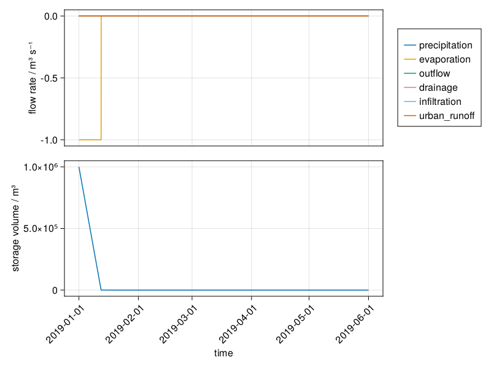
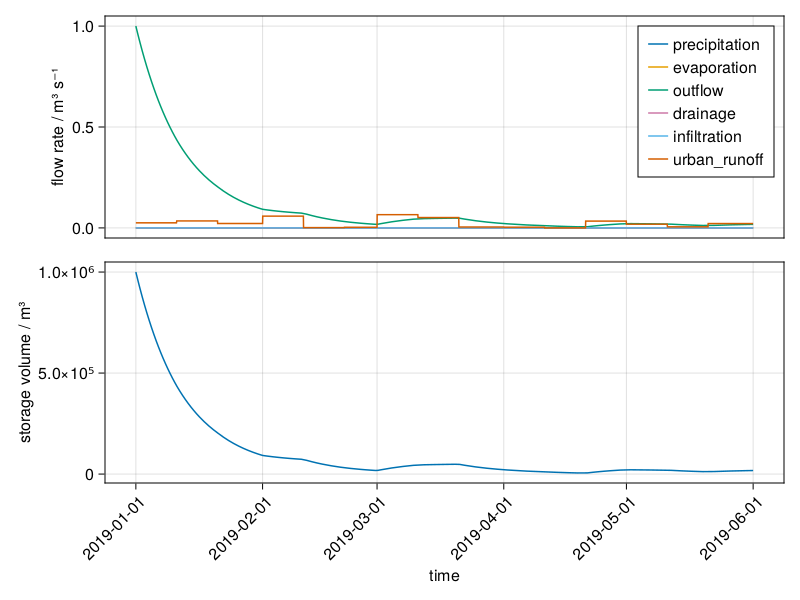

The following examples demonstrate the impact of forcings and the user allocation functionality for a single free draining LSW. The simulations are simulated with synthetic data to highlight the functionality of Bach, with the exception of example 1.9 and 1.10 which show the Bach prototype simulation of the Hupsel LSW.
1.1 No external forcing
1.2 Precipitation
1.3 Evaporation
1.4 Precipitation and evaporation
1.5 Infiltration
1.6 Urban Runoff
1.7 Allocation to a single user
1.8 Allocation to multiple users
1.9 Hupsel water balance (single LSW)
1.10 Hupsel water balance comparison with Mozart
2. Demonstration of a Level Controlled LSW
The following examples demonstrate the water management and user allocation functionality for a level controlled LSW. The simulations are simulated with synthetic data to highlight the functionality of Bach, with the exception of example 2.1 and 2.3 which show the Bach prototype simulation of the Tol LSW.
2.1 Tol water balance (single LSW)
2.2 Level Control and multiple users
2.3 Tol water balance comparison with Mozart.
Code
# Set up for demo simulations# Load Julia LibrariesusingBachusingDuetusingDatesusingTOMLusingArrowusingDataFramesimportBasicModelInterface as BMIusingSciMLBaseusingGraphsusingGLMakieusingCairoMakieusingPlotsusingDataFrameMacros
This fictional free flowing LSW is simulated with only the external forcing of synthetic precipitation data. The storage and the outflow respond to the preciptation as shown below.
Code
case ="precipitation"## Code## Set updemoconfig["starttime"] =Date("2019-01-01")democonfig["endtime"] =Date("2020-01-01")dummydata =@subset(lswforcing, :variable ==Symbol("precipitation"), :location ==151358, :time >= config["starttime"], :time <= config["endtime"])dummydata.location .= lsw_iddemoconfig["forcing"] =DataFrame(time=dummydata.time, variable=dummydata.variable, location=dummydata.location, value=dummydata.value *3) # Exaggerated for demodemoconfig["profile"] =DataFrame(location=lsw_id, volume=[0.0, 1e6], area=[1e6, 1e6], discharge=[0.0, 1e0], level=[10.0, 11.0])# Simulate and Plotreg = BMI.initialize(Bach.Register, democonfig)solve!(reg.integrator) # solve it until the end# println(reg)# Plotfig_2 = Duet.plot_series(reg, lsw_id)display(fig_2)
structural_simplify
ODAEProblem 10:05:44.249
init
1.3 Evaporation forcing
The LSW loses water from evaporation. Outflow occurs according to the VAD as in example 1.1, but overall volume decline is faster rate due to additional loss from evaporation. Evaporation does not occur in an empty LSW.
The second example shows the LSW with no simulated discharge, so that the only output is evaporation
Code
case ="evaporation"## Code## Set uplsw_id =1democonfig["starttime"] =Date("2019-01-01")democonfig["endtime"] =Date("2019-06-01")dummydata =@subset(lswforcing, :variable ==Symbol("evaporation"), :location ==151358)democonfig["forcing"] =DataFrame(time=dummydata.time, variable=dummydata.variable, location=lsw_id, value=dummydata.value *3)democonfig["profile"] =DataFrame(location=lsw_id, volume=[0.0, 1e6], area=[1e6, 1e6], discharge=[0.0, 1e0], level=[10.0, 11.0])## Simulatereg = BMI.initialize(Bach.Register, democonfig)solve!(reg.integrator) # solve it until the end# println(reg)## Plotfig_3 = Duet.plot_series(reg, lsw_id)display(fig_3)
This example shows the evaporation and precipitation flux simulated together
Code
case ="evaporation_precipitation"## Code## Set updemoconfig["starttime"] =Date("2019-01-01")democonfig["endtime"] =Date("2019-06-01")dummydata_e =@subset(lswforcing, :variable ==Symbol("evaporation"), :location ==151358)dummydata_p =@subset(lswforcing, :variable ==Symbol("precipitation"), :location ==151358)dummydata =append!(dummydata_e, dummydata_p);sort!(dummydata, [order(:time, rev=false)]);democonfig["forcing"] =DataFrame(time=dummydata.time, variable=dummydata.variable, location=lsw_id, value=dummydata.value *3)## Simulatereg = BMI.initialize(Bach.Register, democonfig)solve!(reg.integrator) # solve it until the end# println(reg)## Plotfig_4 = Duet.plot_series(reg, lsw_id)display(fig_4)

structural_simplify
ODAEProblem 10:15:07.005
init
1.5 Infiltration
Infiltration is a negative flux of the LSW. This example shows the LSW storage responding to an enhanced forcing of infiltration. There is no outflow simulated of this LSW, so that the only output is the infiltration
Code
case ="Infiltration"## Code## Set upconfig =Dict{String,Any}()lsw_id =1config["lsw_ids"] = [lsw_id]config["update_timestep"] =86400.0starttime =DateTime("2019-01-01")config["starttime"] = starttimeconfig["endtime"] =Date("2019-02-01")config["state"] =DataFrame(location=lsw_id, volume=1e6)config["static"] =DataFrame(location=lsw_id, target_level=NaN, target_volume=NaN, depth_surface_water=NaN, local_surface_water_type='V')config["forcing"] =DataFrame(time=starttime, variable=:infiltration, location=lsw_id, value=1.5e-6)config["profile"] =DataFrame(location=lsw_id, volume=[0.0, 1e6], area=[1e6, 1e6], discharge=[0.0, 0.0], level=[10.0, 11.0])## Simulatereg = BMI.initialize(Bach.Register, config)solve!(reg.integrator); # solve it until the end## Plotfig_5 = Duet.plot_series(reg, lsw_id)display(fig_5)
structural_simplify
ODAEProblem 17:26:41.205
init
1.6 Urban Runoff
Urban runoff is a surface water input to the LSW. This example shows the LSW storage responding to the influx forcing of urban runoff.
Code
case ="Urban Runoff"## Code## Set updemoconfig["starttime"] =Date("2019-01-01")democonfig["endtime"] =Date("2019-06-01")dummydata =@subset(lswforcing, :variable ==Symbol("urban_runoff"), :location ==151358)dummydata.value *=3# Emphasised to highlight the functionalitydemoconfig["forcing"] =DataFrame(time=dummydata.time, variable=dummydata.variable, location=lsw_id, value=dummydata.value *3)## Simulatereg = BMI.initialize(Bach.Register, democonfig)solve!(reg.integrator) # solve it until the end#println(reg)## Plotfig_6 = Duet.plot_series(reg, lsw_id)display(fig_6)
structural_simplify
ODAEProblem 18:40:57.283

init
1.7 Allocation to a single user (agriculture)
In this example, the Hupsel LSW is simulated with synthetic agricultural demand to demonstrate the Bach functionality to allocate to a General User
Code
case ="SingleUser"## Code## Set updemoconfig =TOML.parsefile("../run.toml");lsw_id =151358democonfig["lsw_id"] = [lsw_id] # Hupseldemoconfig["starttime"] =Date("2019-01-01")democonfig["endtime"] =Date("2019-06-01")# Clear forcing data for agriculture and replace with synthetic datadummydata = lswforcingdummydata =@subset(dummydata :variable !=Symbol("demand_agriculture") )dummydata_demagric =@subset(lswforcing, :variable ==Symbol("demand_agriculture") ,value:=0.2, :location ==131183)dummydata =append!(dummydata, dummydata_demagric)democonfig["forcing"] =DataFrame(time=dummydata.time, variable=dummydata.variable, location=lsw_id, value=dummydata.value)## Simulatereg = BMI.initialize(Bach.Register, democonfig)solve!(reg.integrator); # solve it until the endprintln(reg)## Plotfig_6 = Duet.plot_series(reg, lsw_id)display(fig_6)# Duet.plot_genuser_series(reg, lsw_id)
1.8 Allocation to multiple users (agriculture and industry)
The allcoation is based upon demand and prioritisation of the users and the available water in the LSW. In a free flowing LSW only water from the LSW can be abstracted by the users: agriculture and industry. In this example there are two users. Agriculture has higher prioirty than industry, therefore when there is a shortage of available water, agriculture abstracts water before industry as demonstrated.
Code
case ="MultipleUser"## Set updemoconfig["starttime"] =Date("2019-01-01")democonfig["endtime"] =Date("2019-06-01")dummydata_dem_a.value .=0.2# To emphasise impact of abstractiondummydata_prio_a =DataFrame(time=democonfig["starttime"], variable=Symbol("priority_industry"), location=lsw_id, value=1.0)dummydata_dem_i =@subset(lswforcing, :variable ==Symbol("demand_industry"), :location ==131183, :time >= democonfig["starttime"], :time <= democonfig["endtime"])dummydata_dem_i.value *= dummydata_dem_a.value .*0.5# Industry demand at 50% of agriculturedummydata_prio_i =DataFrame(time=democonfig["starttime"], variable=Symbol("priority_industry"), location=lsw_id, value=2.0)dummydata =append!(dummydata_dem_a, dummydata_dem_i, dummydata_prio_a, dummydata_prio_i)democonfig["forcing"] =DataFrame(time=dummydata.time, variable=dummydata.variable, location=lsw_id, value=dummydata.value)## Simulatereg = BMI.initialize(Bach.Register, democonfig)solve!(reg.integrator) # solve it until the end# println(reg)## Plot# fig_7 = plot_genuser_series(reg, lsw_id, lswusers = ["agric", "indus"]) #need to update allusers function # display(fig_7)
1. 9 Water balance of a single LSW (Hupsel)
Simulation 1.9 is for the LSW Hupsel. The LSW is a free flowing LSW.
Code
## Code## Set upconfig =TOML.parsefile("run.toml")config["lsw_id"] = [151358] # Hupsel. Disconnected## Simulatereg = BMI.initialize(Bach.Register, config)println("solve! ", Time(now()))@timesolve!(reg.integrator) # solve it until the endprintln(reg)# Plotfig_9 = Duet.plot_series(reg, config["lsw_ids"][1]; level=true)display(fig_9)
1.10 Water balance comparison Hupsel
The following two figures show Hupsel LSW water balance for the Bach prototype compared to the water balance simulated by Mozart, the precursor to Bach. The figures show a good agreement between the two simulations
2.1 Single Level Controlled LSW (Tol)
Simulation 2.1 is for the LSW Tol. The LSW is a level controlled meaning that water is allocated to maintain water levels at a target level. This simulation demonstrates the LSW with the Bach prototype.
Code
## Codecase ="tol"# Set Upconfig =TOML.parsefile("run.toml")config["lsw_id"] = [200164] # Tol# Simulatereg = BMI.initialize(Bach.Register, config)println("solve! ", Time(now()))@timesolve!(reg.integrator) # solve it until the endprintln(reg)# Plotfig_12 = Duet.plot_series(reg, config["lsw_ids"][1]; level=true)display(fig12)# fig_13 = Duet.plot_wm_series(reg, config["lsw_ids"][1]; level = true)# display(fig_13)
2.2 Single Level Controlled LSW with additional General Users
Simulation 2.2 is for a hypothetical level controlled LSW situation. This level control LSW has an additional users (agriculture) with a lower priority than the level control. In this scenario water is allocated to the users irder of priority, first based on the level of the LSW with respect to the target level, and additionally with water from the external network when required. The LSW is a level controlled meaning that water is allocated to maintain water levels at a target level.
Code
case ="LevelControl_MultipleUsers"## Set updemoconfig =TOML.parsefile("run.toml")democonfig["lsw_id"] = [200164] # Take forcings from Toldemoconfig["starttime"] =Date("2019-01-01")democonfig["endtime"] =Date("2019-06-01")# Add in synthetic data for demandforcings = lswforcing# TODO create dummy data for water management and agric scenario to include# democonfig["forcing"] = DataFrame(time=dummydata.time, variable=dummydata.variable, location=lsw_id, value=dummydata.value)## Simulatereg = BMI.initialize(Bach.Register, democonfig)solve!(reg.integrator) # solve it until the end# println(reg)## Plot# fig_14 = plot_user_wm_series(reg, lsw_id, lswusers = ["agric", "indus"])# display(fig_14)
2.3 Tol water balance comparison with Mozart
The following two figures show Tol LSW water balance for the Bach prototype compared to the water balance simulated by Mozart, the precursor to Bach. The figures show a good agreement between the two simulations